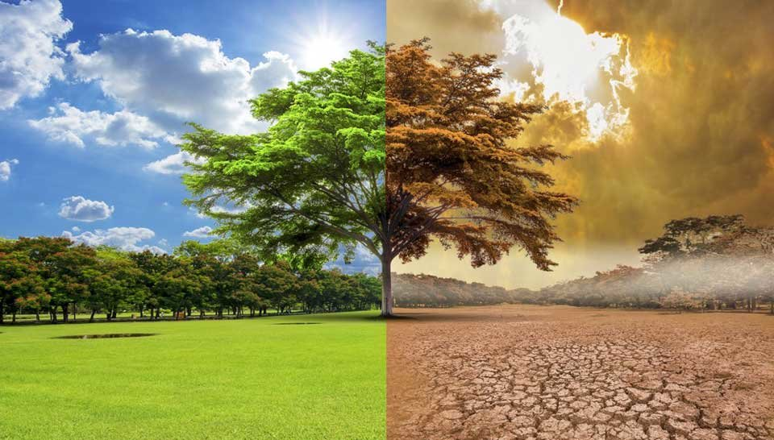

¿Qué es el climatico?
Formas de combatirlo:
Presentación sobre el cambio climatico.
Noticias Relevantes Sobre el cambio Climatico
Acción por el Clima planta un millón de árboles en la campaña
Más de 2.200 voluntarios Repsol han contribuido a los Objetivos de Desarrollo Sostenible
Sánchez pide "ambición" en la lucha por el clima o se llegará a un "punto de no retorno
Las universidades españolas se unen para liderar la lucha contra el cambio climático
Alerta climática: el hielo del Polo Norte alcanzó mínimos históricos en octubre
Asi nos afecta el cambio climático
Las evaluaciones del IPCC de 1990 y1992